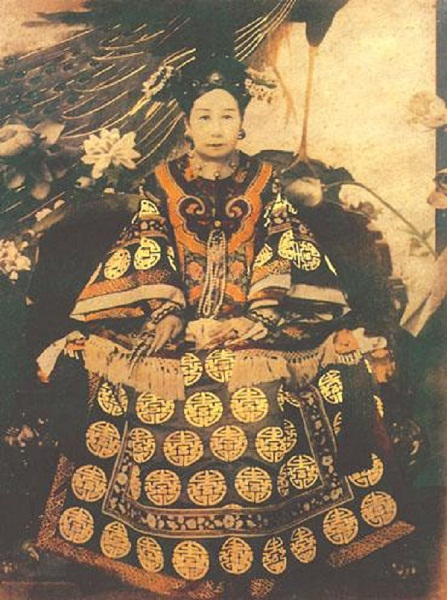

Đây là lịch sử một người đàn bà khắc nghiệt và tàn bạo nhất của nước Tàu ở cuối thế kỷ XIX, đầu thế kỷ XX. Bàn tay ngọc của bà nắm cả quyền sinh tử của một đế quốc phong kiến, rộng một nửa châu Á, gồm trên 400 triệu dân. Cuộc đời dâm đãng của bà mãi cho đến 80 tuổi vẫn còn làm kinh ngạc cả thế giới, và trên địa hạt chính trị một mình bà nắm đầu cả một triều đại Mãn Thanh, mà bà làm cho run sợ, kinh hồn, trong 5 năm chuyên quyền độc đoán, đương đầu với 6 cường quốc: Anh, Pháp, Đức, Mỹ, Nga, Nhật.
Hai nhà văn lừng danh nhất của nước Tàu, Lương Khải Siêu và Khang Hữu Vi, khuyên bà, bà không nghe. Một tay gian hùng bậc nhất ở triều đình, Viện thế Khải sợ bà như sợ cọp. Ngồi trên ngai vàng, và dẫm chưn lên hàng triệu xác chết. Thế mà cả nước Tàu chẳng ai dám làm gì bà. 83 tuổi bà chết, nước Tàu bỗng dưng không có chủ, rơi vào nội loại, đồ nát tan tành…

TRÊN NGỰC CÓ HÌNH CON HỔ
Mới ra chào đời 3 hôm, cô bé Lan Nhi đã có một ông thầy xem tướng bảo: nơi ngực có hình con hổ, đó là điềm quý tướng, về sau khi lớn lên được tiến cung làm Chúa tể thiên hạ”.
Cha mẹ của Lan Nhi thuộc dòng thế gia lệnh tộc được trọng vọng nhất ở Mãn Châu. Tuy vóc vạc bé nhỏ nhưng bẩm chất cứng cỏi, đứa bé đã thường thích tắm gội bằng nước lạnh và phơi truồng trước gió mùa giá rét.
Vào thời ấy ly loạn tràn lan khắp xứ Trung Hoa. Hai nước Pháp và Anh dùng võ lực uy hiếp Chính phủ của Hoàng đế nhà Thanh buộc phải mở rộng các thương cảng cho ngoại quốc thông thương, bồi thường chiến phí và nhượng Hương Cảng cho người Anh làm tôi giới. Toàn dân sôi sục căm hờn, nhất là đối với các giáo sĩ và những nhà doanh thương ngoại quốc.
Một người tên là Hồng Tú Toàn đứng lên cầm đầu một đám nghĩa quân, và xưng hiệu “Thái bình thiên quốc” nổi lên chống lại triều đình Mãn Thanh. Người theo rất đông, thế giặc mạnh như vũ bão, sắp tươi tỉnh của cha Lan Nhi trấn nhậm, ông cùng gia quyến lo chạy trốn trước, bỏ cả nhiệm vụ. Về sau bị triều đình khép tội, bất cầm ngục. Ông sầu muộn nên phát bệnh chết trong khám.
Từ đó Lan Nhi và mẹ lưu lạc đó đây, sau cùng vì đói khổ quá nên Lan Nhi phải bán mình vào nhà một trọc phú ở Quảng Đông. Bị hành hạ khổ sở đủ điều, tuy vậy nàng cố nhẫn nhục chịu đựng.
Khi Hoàng Đế Đạo Quang băng hà, vua Hàm Phong lên nối ngôi Thiên Tử và giáng chiếu tuyển chọn cung nữ. Theo tục lệ triều Mãn Thanh, cung nữ được tuyền trong hàng quý tộc và hoàng phái, Lan Nhi vốn dòng quý phái nên nàng quyết định ghi tên ứng thí.
Trước ngày lễ tuyển phi, quan Thái phó tới dạy cho Lan Nhi những cách đi đứng, lễ nghi và đối đáp theo tục lệ trong Cung.
Lúc nàng đến trình diện trước ban giám khảo, nàng đã làm cho toàn ban chấm thi phải lấy làm lạ về tài ứng đối trôi chảy và dáng dấp yêu kiều của nàng. Kể từ đó phải chịu một phen lựa kín đáo về thân thể do những bà giám khảo xem xét kỹ lưỡng trong căn phòng vắng vẻ.
Những thiếu nữ được trúng tuyển sẽ được trình diện trước Hoàng đế và Ngài sẽ chọn những người mà Ngài ưa thích nhất. Số phận của đám người ấy sẽ được địn đoạt trong giờ phút chót này. Trong khi chờ đợi Ngự giá trong vườn Thượng uyển, đám thiếu nữ ấy bị bọn thái giám lên mặt hống hách, nên khép nép sợ hãi. Duy có Lan Nhi vẫn nghiễm nhiên như thường. Nàng đợi lúc xe giá đến gần, liền lên giọng chỉ trích bọn Nội gián kia, cốt làm cho nhà Vua lưu ý đến mình. Thật quả như dự đoán của nàng, vua Hàm Phong ngạc nhiên về sự dạn dĩ ấy, và đăm đăm nhìn sắc đẹp lộng lẫy của nàng, liền chấm cho nàng được trúng tuyển. Ngồi trên chiếc kiệu hoa rực rỡ ánh vàng có các phó quan theo hầu thẳng tiến vào Cung điện, Lan Nhi đã thỏa giấc mộng phi tần từ lấy lâu ôm ấp.
NGỒI BÊN CHÂN VUA
Sau buổi tiến Cung, Lan Nhi từ địa vị một Cung nữ tầm thường không bao lâu làm cho mọi người phải chú ý. Dùng tài ăn nói bặt thiệp, khéo chiều chuộng, nàng đã làm đẹp lòng Hoàng hậu Từ An, vợ chính thức của Hoàng đế. Về phần vua Hàm Phong, Ngài không khỏi đắm say vì sắc diễm kiều và giọng nói dịu dàng của quý phi, đào tơ mơn mởn, đến nỗi khuya sớm không rời.
Sau một thời gian tạm yên loạn “Thái bình của Hồng Tú Toàn lại nổ bùng ghê gớm hơn bao giờ hết. Loạn quân vây hãm Nam kinh và uy hiếp cả Bắc kinh. Quân triều phải liều thân ngăn trở mới chận được bước tiến vũ bão của quân phiến loạn. Trong khi ấy Lan Nhi khéo chia xẻ nỗi lo âu phiền muộn của nhà Vua bằng cách khuyên lơn và dự bàn tới việc nước. Nàng âu yếm ngồi dưới chân vua, đọc các sớ tâu từ xa gởi về, và đàm đạo cùng Vua về cách giải quyết những vấn đề rắc rối. Trong những trường hợp này, nàng Cung phi yêu dấu của Vua đã tỏ ra thông minh phi thường.
Thời vận đã đến kịp lúc giúp cho nàng sớm toại nguyện, vì sau đó không lâu, nàng sanh được một Hoàng nam đúng vào chỗ mong ước của vua Hàm Phong, vì Hoàng hậu Từ An không có con, Lan Nhi liền được đưa lên chức Tây phi.
Sau khi được lòng nhà vua sủng ái, nàng càng ráo riết hoạt động để kéo những kẻ quyền uy trong Triều về phe mình, trong số ấy có cả các vị Đại tướng và những bậc Vương hầu. Trong lúc Lan Nhi củng cố địa vị bên trong thì bên ngoài những cuộc đổ máu vẫn tiếp diễn mãi không ngừng.
Lợi dụng cảnh hỗn độn trong nước, Triều đình bất lực, người Anh và người Pháp bèn thừa cuộc tàn sát giáo sĩ, tuyên chiến với Trung Hoa, chiếm lấy Quảng Đông, rồi tiến thẳng tới Bắc Kinh. Quân Triều vỡ tan trước lực lượng hùng hậu của đối phương. Nhà vua nhất định dời đô về Nhiệt Hà, cách Bắc Kinh 125 dặm ở về mạn Bắc Vạn Lý Trường Thành.
Đấy là năm 1860, một thời kỳ u ám thảm thê nhất trong lịch sử Trung Hoa, Quân Đồng Minh Anh, Pháp cướp bóc châu ngọc, phóng hỏa thiêu hủy Cung điện, tiếng kêu khóc vang rền một phương trời, khói bốc mù mịt lan rộng hàng trăm dặm.
Hơn nữa, loạn “Thái bình” đoạt lấy Nam Kinh, tín đồ Hồi giáo nổi loạn phá Đại lý. Biết thế chống cự không lại, Thanh Triều phải chịu cầu hòa và ký hòa ước với Anh Pháp. Theo bản ký kết thì ngoài khoảng bồi thường quân phí, Triều đình còn phải cắt đất nhường các đô thị lớn cho Anh và Pháp làm tô giới và người ngoại quốc được tự do thông thường trong nước.
Hoàng Đế Hàm Phong vừa thất vọng vừa đau ốm. Triều thần đổ tội cho Tây phi đã mê hoặc quân vương. Bất đắc dĩ nhà vua phải chiều theo ý của quần thần, hạ chỉ buộc Tây Phi phải tử tiết sau khi vua bằng hà. Nhưng ngọc tỉ (ấn vua) không cánh đã bay đâu mất, khi người ta kiếm để đóng vào tờ sắc chỉ nói trên.
CẦM ĐẦU MỘT NƯỚC
Ngày 25-8-1861 vua bằng hà, thọ được 30 tuổi. Chiếc ấn Vua bỗng nhiên lại xuất hiện trong tay vị thân vương Quảng, bác ruột của vua, và là một trong những tinh nhơn tin cậy nhứt của Tây phi. Hành động trước tiên của nàng là tiêu diệt bọn Đại Thần trước kia đã tố cáo nàng, khiến các quan đều khiếp vía.
Tây phi đưa đứa con trai mới 5 tuổi lên ngôi, đặt hiệu là Đồng Trị Hoàng Đế, và tự phong cho mình làm Thái hậu hiệu là Từ Hi. Nàng mới có 27 tuổi. Vì Đồng Trị còn nhỏ, nên Từ Hi Thái Hậu cầm quyền nhiếp chính, coi sóc tất cả việc nước. Quảng, ông bác chồng và là tình nhân của nàng, được nàng tôn làm Phụ chánh Đại thần, nhưng nàng không cho dự việc nước. Từ đó về sau nàng càng lộng quyền, trở nên bạo tàn, kiêu xa thái thậm. Nàng đem tất cả quân lực vào việc dẹp loạn “Thái Bình”, đoạt lại được Phúc châu và phá tan quân giặc trong những năm về sau.
Từ khi Cung điện bị phá hủy, Triều đình dời tới một khu cấm ở giữa Bắc Kinh, chung quanh có những bức tường đá, bên trong có hồ sen, có ao cá vàng, có những vườn hoa mẫu đơn, những khu rừng con con trồng toàn kỳ hoa dị thảo. Nàng truyền lịnh đàn ông không được hớt tóc, và ăn mặc chải chuốt, đàn bà không được trang điểm. Những đứa trẻ sanh trong thời kỳ có tang của đứa vua đều bị coi là con hoang vì mẹ cha chúng đã phạm vào luật thanh kiết.
Sau thời kỳ tang chế, mọi người đều nảy nở bao niềm hy vọng trong tâm khảm, chỉ riêng có Hoàng Đế Đồng Trị lúc ấy được 12 tuổi. Tuy là con ruột của Từ Hi Thái Hậu, được nối nghiệp Đế Vương, nhưng nhà vua thiếu niên cảm thấy mình ở CUng điện nguy nga mà không khác gì bị giam hãm chốn lao tù. Ngày ngày hoàng đế phải dậy từ buổi sớm tinh sương, ngự trên ngai vàng và nghe những bản sớ tâu dài dằng dặc mà ngài chẳng hiểu tí nào cả. Mỗi cử động của ngài đều phải tuân theo một kỷ luật khắc nghiệt. Mẹ là Từ Hi Thái Hậu, chỉ luôn luôn nói tới quyền lợi và bổn phận, không hề có một cử chỉ gì bộc lộ lòng trìu mến thương yêu con. Dần dần Ngài đâm ra oán ghét con người khô khan, hách dịch và vô nhân đạo ấy, trong lòng vị ấu quân nảy sinh ra ý tưởng thoát ly ra khỏi sự kềm chế của bà.
Năm Ngài lên 17 tuổi, Triều đình chọn được 7 thiếu nữ con nhà quý tộc để cho Ngài chọn lựa Hoàng Hậu. Thay vì nghe theo lời Từ Hi Thái Hậu, buộc phải chọn nàng Thân Bình, hoàng đế lại chọn thiếu nữ A Lư Đức, có sắc đẹp lộng lẫy vừa lòng Ngài. Từ Hi quắc mắt nhìn con, cố nén một tiếng kêu căm hờn.
Từ đó giữa Từ Hi Thái Hậu và Hoàng Hậu mới sinh ra mối tư thù.
Thoạt tiên Thái Hậu tìm cách chia rẽ vua và Hoàng hậu, viện cớ “quốc gia hữu sự không nên ninh sách” kỳ thật là sợ Hoàng hậu có thai thì ngôi vị và quyền uy của mình sẽ bị gãy đổ. Nơi phòng Vua bị bọn hoạn quan canh phòng không cho Hoàng hậu đến thường, một mặt khác Thái hậu ngầm đưa các cung tần đến cho con đắm chìm trụy lạc, càng ngày càng sa đọa trong nhục dục, để đừng còn tưởng nhớ đến Hoàng hậu nữa. Nhà vua gặp cảnh chia ly với người yêu, đâm ra thất vọng, chơi bời phóng đãng, tiêu mòn sức lực trong cảnh mê ly bất kể ngày đêm. Không bao lâu, nhà Vua vướng bệnh nặng, ngự y khám xong cho thấy Ngài mắc bệnh phong tình.
Dầu có lời ngăn cấm của Từ Hi Thái Hậu, khi nghe tin chồng hấp hối, Hoàng hậu cũng xông đại vào chốn long sàng. Nhà vua dù kiệt sức cũng cố thảo bức di chúc, ra lịnh sau khi Ngài băng hà, Triều đình bắt giam Từ Hi Thái Hậu. Tin ấy đến tai Thái Hậu, bà tức tốc đến nơi bắt nhà Vua phải đưa di chúc ra, Đồng Trị sợ hãi không dám cãi lịnh. Từ Hi xem xong liền kề vào ngọn bạch lạp, đốt cháy vèo.
Canh hai đêm ấy, nhà vua vì quá khiếp đảm nên băng hà (12-1-1875) Ngài mới hưởng thọ được 19 tuổi.
Tang lễ cử hành xong, Từ Hi Thái Hậu liền lập một người cháu mới được 4 tuổi lên ngôi, tức là vua Quang Tự. Về sau nghe tin con dâu có mang và nếu sanh con trai thì ngôi báu phải trả về đứa bé và chức Thái Hậu cũng mất hết uy quyền, vì phải thuộc về Hoàng Hậu. Sau vài hôm tính kế, Từ Hi Thái Hậu cho vời Hoàng hậu và thân phụ nàng vào cung, đem hết lý lẽ nền luân lý chuyên chế giảng giải cho cha con Hoàng Hậu hiểu rõ ràng vì quyền lợi của quốc gia, mà không thể để cho đứa bé được ra đời vì nó đã mang phải bịnh di truyền của cha nó điều này có thể làm nhục nhã cho quốc thể ngàn đời. Chỉ có cách hy sinh thì danh dự của Hoàng hậu, của Hoàng đế vừa băng hà, và quốc thể của Thanh triều mới có thể cứu vãn được.
Cố nén dòng lệ đau thương tủi hờn, Hoàng Hậu A Lư Đức vì lòng trung trinh, xem phận sự nặng hơn tánh mạng, kết liễu đời mình và luôn cả bào thai đang đang nằm trong bụng bằng chén độc dược, sau khi chồng chết được 70 ngày.
Vững tin vào uy quyền của mình, Từ Hi Thái Hậu càng ngày càng xa xỉ kiêu căng, xây thêm Cung điện, bày đủ cuộc vui. Nhưng trong cung còn có Từ An Thái Hậu là vợ của vua Hàm Phong.
Muốn diệt trừ luôn bà này để được một mình hoàn toàn tự do, Từ Hi hâm bắt giam từ An. Bà này liền lấy trong tay áo ra một đáo sắc chỉ của Hoàng Đế quá cố để lại trao cho Từ Hi xem. Trong bản chỉ ấy, vua Hàm Phong bảo rằng “Từ Hi là một người đàn bà dẫy đầy tham vọng và chuyên chế, nên Ngài trao cho Từ An Thái Hậu trọn quyền bắt giam Từ Hi để xét xử, nếu thấy cần cho quyền lợi của Triều đình”.
Thế mà Từ An không bao giờ dùng đến quyền hành ấy. Để tỏ lòng cao thượng của mình, Từ An Thái Hậu liền đốt mảnh giấy trước sự kinh ngạc của Từ Hi Thái Hậu.
Từ Hi tỏ vẻ cảm động và cảm ơn Từ An về cử chỉ đẹp đẽ ấy. Muốn tỏ tình thân mật, sau khi về Cung, Từ Hi sai thái giám mang biếu Từ An một chiếc bánh do chính tay bà gói, Từ An vui vẻ ăn chiếc bánh ấy, và bị trúng độc chết ngay trong đêm đó.
Hôm sau, anh ruột của Từ An Thái Hậu đến trước cửa Ngọ môn đầu cáo kẻ đã đầu độc em gái của ông, và kêu nài điều tra về cái chết bất ngờ ấy. Nhưng chẳng ai dám nghe những lời kêu thông thiết của ông! Ông kêu mãi đến nỗi khan cổ, khóc hết hơi và cuối cùng kiệt sức, đâm ra cuồng trí, xé quần áo và chết trong cơn mê sảng…
Kể từ đó, Từ Hi Thái Hậu tự do say đắm thú vui riêng và chọn những thanh niên trai tráng từ 16 đến 20 tuổi, vui thú trăng hoa. Những chàng trai trẻ may mắn ấy đều bị Thái Hậu cho thủ tiêu một cách âm thầm bí mật, sau một thời gian ân ái.
Cuộc đời dâm đãng của Từ Hi Thái Hậu là cả một trường hi hữu trong lịch sử. Cho đến 80 tuổi, Từ Hi Thái Hậu vẫn còn sức lực, da thịt của bà còn tươi thắm như hồi còn 40 tuổi. Luôn luôn trong phòng Thái Hậu, có rất nhiều chậu hoa quý, và một bày chó, một bầy mèo. Tiếp các bà Phu nhân vợ các Đại sứ Ngoại quốc, Từ Hi Thái Hậu đưa họ đi dạo trong vườn Ngự uyển, và luôn luôn bà đi khỏe hơn họ. Bà nhảy ngang qua những dòng suối uốn quanh, bà leo lên các gò đá lởm chởm, bà đi bách bộ hằng hai ba giờ không thấy mỏi. Một hôm, trong một cuộc tiếp tân, giữa đám đông các bà vợ của các ông Đại sứ Anh, Pháp, Mỹ, Đức, Ý, bà cười nói với bà Đại sứ Pháp như sau đây:
“Quý bà cứ phàn nàn rằng phụ nữ mình mau già. Đó là bởi tại chồng của các bà quên bà, và tình nhân của bà bỏ rơi bà…”
Bà Stéphen Pichon, vợ của viên Đại sứ Pháp, nghe Từ Hi Thái Hậu nói như thế, bà trố mắt nhìn Thái Hậu, hoàn toàn kinh ngạc. Trong lúc đó, các bà Đại sứ Mỹ, Anh, Đức, Ý, Nga cười ngất, và cũng theo phép xã giao phải trầm trồ khen ngợi Thái Hậu.
Câu chuyện bất hủ này được truyền sang Âu Châu làm tài liệu lịch sử và ngoại giao vô cùng thú vị cho các nhà báo thời bấy giờ. Đến nỗi một tờ báo bệ vệ, già cổ lỗ nhất của Anh quốc, là tờ Time, cũng không khỏi không đăng mấy dòng tỏ lời khâm phục sức khỏe dẻo dai hiếm có của Thái Hậu Trung Hoa!
Từ Hi Thái Hậu xuống lịnh tuyển vợ cho vua Quang Tự, nhưng bà không khỏi ngạc nhiên khi nghe Bộ Lễ trình chỉ có vỏn vẹn hai thiếu nữ ứng cử.
Nguyên nhân sự thờ ơ ấy chỉ vì những quan nhà Thanh không muốn cho các con gái họ vào Cung điện của bà Tư Hi là nơi luôn luôn xảy ra những chuyện ám sát và đầu độc vì quyền lợi hoặc chính trị. Bà Từ Hi tức giận truyền chỉ cho vờ 8 thiếu nữ, con của các quan mà Bà cho là có đủ điều kiện để tham dự cuộc tuyển lựa làm Hoàng Hậu.
Tới ngày chọn lựa, những thiếu nữ nói trên được đưa vào một gian phòng, cực kỳ lộng lẫy. Từ Hi Thái Hậu ngự trên ngai vàng, nét mặt lạnh lùng đôi mắt sắc như dao. Hoàng Đế Quang Tự, cháu bà, khép nép đứng bên trái. Đoàn hoa khôi trang diện vô cùng diễm lệ lần lượt diễn qua trước mặt Thái Hậu và Hoàng Đế, mỗi nàng cầm nơi tay một phiến bài có ghi rõ ràng tên tuổi, gia thế, chức vị của mẹ cha quê quán. Thái Hậu trao cho Hoàng Đế một cây vương trượng, để lúc Hoàng Đế ưng ý nàng nào thì ngài sẽ trao cây vương trượng cho nàng đó cầm.
Say sưa vì sắp đẹp yêu kiều một nàng trong bọn Vua Quang Tự toan trao cây vương trượng cho nàng nhưng bất ngờ Từ Hi Thái Hậu gằn mạnh một tiếng chỉ cho nhà vua một thiếu nữ khác, con gái của một người anh họ của Thái Hậu, Hoàng Đế lấy làm phẫn uất nhưng không dám trái lịnh, đành chọn vị Hoàng Hậu không vừa ý mình. Người thiếu nữ được vì vua trẻ tuổi để ý, buồn bã ra về, lòng vô cùng chán ngán vì thất vọng. Không thể chống lại niềm tủi nhục đau hờn, sau khi tắm gội tinh khiết, nàng kết kiễu cuộc đời bạc phước của mình bằng một giải lụa màu trinh trắng.
Vua Quang Tự nghe tin ấy buồn bã vô cùng. Ngài nhất định không yêu Hoàng Hậu do Thái Hậu ép buộc gán cho Ngài, Ngài đi tìm an ủi trong cánh tay một nàng cung nữ, xinh đẹp, dịu dàng, có học thức tên là Ngọc Trân. Do theo những lời khuyên nhủ của Ngọc Trân, Hoàng Đế nhất quyết ban hành những sự cải cách chống lại quyền uy tàn ác của Thái Hậu. Để theo kịp liệt cường về mọi mặt, Ngài cho dịch sách vở Âu châu ra tiếng Trung Quốc và tạo lập những đoàn hùng binh võ trang theo kỹ thuật Tây phương. Thái Hậu ngoài mặt giữ vẻ thản nhiên, nhưng thâm tâm vô cùng căm tức.
Một hôm Hoàng đế ra lịnh cho vị Đại thần Viên Thế Khải bắt Từ Hi Thái Hậu hạ ngục, nhưng Viên Thế Khải tuy rập đầu tuân lệnh vua, nhưng lại sợ Thái Hậu, nên đem mọi việc kể lại cho Thái hậu rõ.
Ngày hôm sau, vào lối 8 giờ sáng khi Hoàng đế lâm triều như thường lệ, một sắc lệnh của Thái Hậu dạy đoàn quân Ngự lâm bắt giữ nhà vua và sau đó đem giam vua ở Doanh đài, trong Hoành thành, ròng rã mấy năm!
Cung nữ Ngọc Trân là người yêu của vua cũng bị giam vào lãnh cung, không một ai được phép thăm viếng. Ngày ngày nàng ngồi dưới một gốc cây táo trong sân cung, tự tay thảo hằng bao nhiêu bài thơ tịnh lâm ly não nuột mà không bao giờ được đến tay quân vương. Hè qua Thu lại, rồi đến Đông về, muôn ngàn cỏ hoa rời cành nơi cung cấm, nàng cung nữ đáng thương kia cũng chết lần mòn trong đá lạnh.
Cây táo mà dân chúng gọi là “Cây táo Ngọc Trân” hiện nay vẫn còn và hàng năm cũng trổ hoa sớm hơn những cây táo khác, hình như còn phảng phất hồn thiêng của Ngọc Trân cung nữ.
Sau đó, Từ Hi Thái Hậu phải đương đầu với bao nhiêu chuyện rối rắm về chính trị. Các địa phương đã trở thành những quốc gia thực sự ở trong nước. Quân Nga chiếm Lữ Thuận, người Đức đánh luôn Thành Đào. Đối với người Tây phương, nước Tàu là miếng mồi béo bổ cần được phân chia gấp. Đứng trước cơ nguy rõ rệt ấy, toàn dân Trung Hoa cực kỳ phẫn uất nên gây ra loạn.
Quyền Phi (les Boxeurs) vùng dậy khắp nơi. Bọn nãy vẫn khăn đỏ tự xưng không chung đội trời với người Tây phương.
Họ tàn sát Nam tước Von Ketteler, sứ thần Đức quốc và tấn công các sứ quán ngoại quốc, bao vây, công hãm các khu nhượng địa, non ba tháng trời mới có viện binh tiếp cứu.
Trong giai đoạn này, Từ Hi Thái Hậu trải qua những giờ phút kinh hoàng và do dự. Ngài thừa rõ nếu quân nội loại đắc thắc thì Ngài sẽ bị chúng hạ bệ. Lúc cuộc chiến đấu sắp tàn. Ngài e người ngoài quốc sẽ tìm vua Quang Tự để ký hòa ước, vì vậy Ngài truyền đến Doanh đài mở cửa ngục rước Hoàng đế về và cùng nhà vua đào tẩu. Vua Quang Tự từ khi nghe tin Ngọc Trân đã chết thì như kẻ không hồn, tha hồ cho bọn thị vệ lôi kéo. Một buổi sáng mùa Đông lạnh lẽo, nhà Vua co ro trên một chiếc kiệu phủ rèm kín. Từ HI Thái Hậu cải trang làm một cô gái quê, các cung tần thị vệ đi xe ngựa, giã từ kinh kỳ, trốn ra cửa Bắc.
Trong lúc ấy đoàn quân ngoại quốc chiến thắng, say sưa, bạo tàn, hãm hiếp, đốt nhà cướp của, cảnh điêu tàn hiện rõ khắp nơi nơi!...
HOÀNG HÔN CỦA NỮ CHÚA
Sau đó không lâu, Hòa ước Bắc kinh được ký kết để chấm dứt cuộc lưu vong của Hoàng gia. Lẽ dĩ nhiên triều đình Trung Hoa phải nhận hết phần lỗi, không chịu bồi thường chiến phi và cắt dất nhượng địa thêm nữa. Dù nậy Từ Hi Thái Hậu vẫn mãn nguyện vì được an toàn trở về ngôi hậu. Trái lại toàn dân còn uất ức và ngấm ngầm hoạt động để gây màm cách mạng về sau này.
Nhà Vua đã mất hết ý nghĩa về đời sống quanh mình và ngày đêm nằm bên bàn đèn thuốc phiện để tiêu sầu. Thái Hậu mặc tình chuyên chế. Dến năm 80 tuổi mà sắc diện bà vẫn tươi trẻ như một thiếu phụ ngoài 40, một điều mà mọi người không khỏi lấy làm lạ.
Vào khoảng hạ tuần tháng 11, năm 1908, sau khi dự yến nơi cung điện, Từ Hi phát bịnh. Trong khi ấy, vua Quang Tự, cũng vướng bịnh nặng và trút hơi thở cuối cùng, miệng còn lẩm bẩm tên người yêu.
Thái Hậu thấy cần gấp rút chọn người kế vị, ngài chọn Phổ Nghi, chất của Ngài, lên ngôi vị Hoàng Đế này mới có 2 tuổi và lấy niên hiệu là Tuyên Thống. Từ HI Thái Hậu băng hà ngày 15 tháng 11 năm 1908. Trong những năm chót, bà đã lo xây dựng nơi yên giấc ngàn thu của mình, và sau khi an tang vẫn có hoạn quan ngày đêm canh giữ mộ phần.
Dưới Triều đại của Từ Hi Thái Hậu, nước Trung Hoa chịu không biết bao nhiêu là thảm bại nhục nhã. Đó cũng vì chế độ tàn bạo u mê của bà. Mỗi lần thảm bại càng nung sôi chất chứa lòng uất hận của toàn dân.
Các Văn sĩ Trung quốc như Lương Khải Siêu sau khi bôn tẩu ra ngoại quốc khỏi bàn tay rướm máu của nhà Thanh có viết nên sách “ Trung quốc sỉ”, lời văn hùng hồn, bi tráng, giọng thành thực thiết tha hài tội Tây Thái Hậu (tức là Từ Hi) và chính sách tôi tệ của bà đã đưa TRung Hoa vào con đường vong quốc. Từ Hi Thái Hậu chết rồi, dân tộc Trung Hoa bừng tỉnh dậy lật đổ Thanh triều.
Nhưng than ôi, cuộc cách mạng của Tôn Văn cũng không làm sao cứu vãn được Trung Hoa, vì một người đàn bà của Triều đại Mãn Thanh đã làm cho nước Tàu mục nát, đổ gãy tan tành!